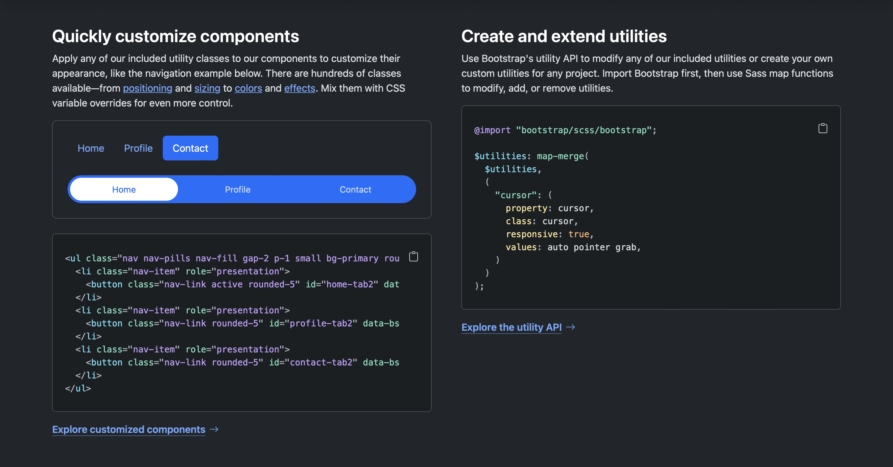

BOOTSTRAP
🌐 No Node.jsKey features: Responsive grid, utilities, prebuilt components.
Technology: CSS, vanilla JS.
Learning curve: Beginner → Intermediate.
Use cases: Quick prototypes, educational projects.
Personal Notes
Bootstrap feels simple to use and great for quick layouts without extra setup.
